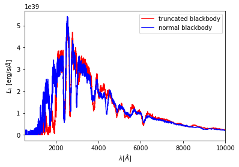

This notebook is available at https://github.com/tardis-sn/tardis/tree/master/docs/running/custom_source.ipynb —-
Running TARDIS with a custom packet source¶
[1]:
import numpy as np
from tardis import constants as const
from astropy import units as u
from tardis.montecarlo.packet_source import BasePacketSource
from tardis import run_tardis
import matplotlib.pyplot as plt
from tardis.io.atom_data import download_atom_data
/usr/share/miniconda/envs/tardis/lib/python3.6/importlib/_bootstrap.py:219: QAWarning: pyne.data is not yet QA compliant.
return f(*args, **kwds)
[2]:
download_atom_data('kurucz_cd23_chianti_H_He')
[tardis.io.atom_data.atom_web_download][INFO ] Downloading atomic data from https://media.githubusercontent.com/media/tardis-sn/tardis-refdata/master/atom_data/kurucz_cd23_chianti_H_He.h5 to /home/vsts/Downloads/tardis-data/kurucz_cd23_chianti_H_He.h5 (atom_web_download.py:47)
Custom packet source class that is derived from BasePacketSource. The method create_packets (which returns nus, mus, energies) has to be defined.
[3]:
class TruncBlackbodySource(BasePacketSource):
"""
Custom inner boundary source class to replace the Blackbody source
with a truncated Blackbody source.
"""
def __init__(self, seed, truncation_wavelength):
super().__init__(seed)
self.truncation_wavelength = truncation_wavelength
def create_packets(self, T, no_of_packets,
drawing_sample_size=None):
"""
Packet source that generates a truncated Blackbody source.
Parameters
----------
T : float
Blackbody temperature
no_of_packets : int
number of packets to be created
truncation_wavelength : float
truncation wavelength in Angstrom.
Only wavelengths higher than the truncation wavelength
will be sampled.
"""
# Use mus and energies from normal blackbody source.
mus = self.create_zero_limb_darkening_packet_mus(no_of_packets)
energies = self.create_uniform_packet_energies(no_of_packets)
# If not specified, draw 2 times as many packets and reject any beyond no_of_packets.
if drawing_sample_size is None:
drawing_sample_size = 2 * no_of_packets
# Blackbody will be truncated below truncation_wavelength / above truncation_frequency.
truncation_frequency = u.Quantity(self.truncation_wavelength, u.Angstrom).to(
u.Hz, equivalencies=u.spectral()).value
# Draw nus from blackbody distribution and reject based on truncation_frequency.
# If more nus.shape[0] > no_of_packets use only the first no_of_packets.
nus = self.create_blackbody_packet_nus(T, drawing_sample_size)
nus = nus[nus<truncation_frequency][:no_of_packets]
# Only required if the truncation wavelength is too big compared to the maximum
# of the blackbody distribution. Keep sampling until nus.shape[0] > no_of_packets.
while nus.shape[0] < no_of_packets:
additional_nus = self.create_blackbody_packet_nus(
T, drawing_sample_size
)
mask = additional_nus < truncation_frequency
additional_nus = additional_nus[mask][:no_of_packets]
nus = np.hstack([nus, additional_nus])[:no_of_packets]
return nus, mus, energies
[4]:
packet_source = TruncBlackbodySource(
53253, truncation_wavelength=2000
)
[5]:
mdl = run_tardis('tardis_example.yml',
packet_source=packet_source)
mdl_norm = run_tardis('tardis_example.yml')
[tardis.plasma.standard_plasmas][INFO ] Reading Atomic Data from kurucz_cd23_chianti_H_He.h5 (standard_plasmas.py:74)
[tardis.io.atom_data.util][INFO ] Atom Data kurucz_cd23_chianti_H_He.h5 not found in local path. Exists in TARDIS Data repo /home/vsts/Downloads/tardis-data/kurucz_cd23_chianti_H_He.h5 (util.py:29)
[tardis.io.atom_data.base][INFO ] Read Atom Data with UUID=6f7b09e887a311e7a06b246e96350010 and MD5=864f1753714343c41f99cb065710cace. (base.py:184)
[tardis.io.atom_data.base][INFO ] Non provided atomic data: synpp_refs, photoionization_data (base.py:187)
[tardis.simulation.base][INFO ] Starting iteration 1/20 (base.py:268)
[tardis.simulation.base][INFO ] Luminosity emitted = 8.02608e+42 erg / s Luminosity absorbed = 2.58369e+42 erg / s Luminosity requested = 1.05928e+43 erg / s (base.py:359)
[tardis.simulation.base][INFO ] Plasma stratification:
t_rad next_t_rad w next_w
Shell
0 9926.501965 9338.157295 0.400392 0.702876
5 9852.611678 9612.552655 0.211205 0.251645
10 9779.813302 9582.236692 0.142695 0.147553
15 9708.082813 9347.739573 0.104556 0.108727
(base.py:350)
[tardis.simulation.base][INFO ] t_inner 9933.952 K -- next t_inner 11412.349 K (base.py:352)
[tardis.simulation.base][INFO ] Starting iteration 2/20 (base.py:268)
[tardis.simulation.base][INFO ] Luminosity emitted = 1.39291e+43 erg / s Luminosity absorbed = 4.54291e+42 erg / s Luminosity requested = 1.05928e+43 erg / s (base.py:359)
[tardis.simulation.base][INFO ] Plasma stratification:
t_rad next_t_rad w next_w
Shell
0 9338.157295 9894.977618 0.702876 0.966539
5 9612.552655 10202.697494 0.251645 0.345750
10 9582.236692 10182.708604 0.147553 0.203029
15 9347.739573 9966.709240 0.108727 0.147105
(base.py:350)
[tardis.simulation.base][INFO ] t_inner 11412.349 K -- next t_inner 9952.175 K (base.py:352)
[tardis.simulation.base][INFO ] Starting iteration 3/20 (base.py:268)
[tardis.simulation.base][INFO ] Luminosity emitted = 8.15076e+42 erg / s Luminosity absorbed = 2.54247e+42 erg / s Luminosity requested = 1.05928e+43 erg / s (base.py:359)
[tardis.simulation.base][INFO ] Plasma stratification:
t_rad next_t_rad w next_w
Shell
0 9894.977618 9365.300413 0.966539 0.691893
5 10202.697494 9687.991731 0.345750 0.246499
10 10182.708604 9558.583356 0.203029 0.150936
15 9966.709240 9323.776228 0.147105 0.111587
(base.py:350)
[tardis.simulation.base][INFO ] t_inner 9952.175 K -- next t_inner 11345.501 K (base.py:352)
[tardis.simulation.base][INFO ] Starting iteration 4/20 (base.py:268)
[tardis.simulation.base][INFO ] Luminosity emitted = 1.36105e+43 erg / s Luminosity absorbed = 4.43259e+42 erg / s Luminosity requested = 1.05928e+43 erg / s (base.py:359)
[tardis.simulation.base][INFO ] Plasma stratification:
t_rad next_t_rad w next_w
Shell
0 9365.300413 9907.030060 0.691893 0.940840
5 9687.991731 10157.363473 0.246499 0.348819
10 9558.583356 10060.340925 0.150936 0.207129
15 9323.776228 9871.609020 0.111587 0.148903
(base.py:350)
[tardis.simulation.base][INFO ] t_inner 11345.501 K -- next t_inner 10009.025 K (base.py:352)
[tardis.simulation.base][INFO ] Starting iteration 5/20 (base.py:268)
[tardis.simulation.base][INFO ] Luminosity emitted = 8.30272e+42 erg / s Luminosity absorbed = 2.63244e+42 erg / s Luminosity requested = 1.05928e+43 erg / s (base.py:359)
[tardis.simulation.base][INFO ] Plasma stratification:
t_rad next_t_rad w next_w
Shell
0 9907.030060 9360.662190 0.940840 0.714939
5 10157.363473 9665.421084 0.348819 0.253723
10 10060.340925 9591.474063 0.207129 0.153326
15 9871.609020 9334.785438 0.148903 0.113393
(base.py:350)
[tardis.simulation.base][INFO ] t_inner 10009.025 K -- next t_inner 11305.404 K (base.py:352)
[tardis.simulation.base][INFO ] Starting iteration 6/20 (base.py:268)
[tardis.simulation.base][INFO ] Luminosity emitted = 1.34104e+43 erg / s Luminosity absorbed = 4.37610e+42 erg / s Luminosity requested = 1.05928e+43 erg / s (base.py:359)
[tardis.simulation.base][INFO ] Plasma stratification:
t_rad next_t_rad w next_w
Shell
0 9360.662190 9876.738275 0.714939 0.941170
5 9665.421084 10154.492596 0.253723 0.342581
10 9591.474063 10115.366542 0.153326 0.201794
15 9334.785438 9911.072182 0.113393 0.144362
(base.py:350)
[tardis.simulation.base][INFO ] t_inner 11305.404 K -- next t_inner 10047.761 K (base.py:352)
[tardis.simulation.base][INFO ] Starting iteration 7/20 (base.py:268)
[tardis.simulation.base][INFO ] Luminosity emitted = 8.44193e+42 erg / s Luminosity absorbed = 2.66459e+42 erg / s Luminosity requested = 1.05928e+43 erg / s (base.py:359)
[tardis.simulation.base][INFO ] Plasma stratification:
t_rad next_t_rad w next_w
Shell
0 9876.738275 9357.637970 0.941170 0.724592
5 10154.492596 9604.319160 0.342581 0.264155
10 10115.366542 9615.353499 0.201794 0.154099
15 9911.072182 9327.253942 0.144362 0.115690
(base.py:350)
[tardis.simulation.base][INFO ] t_inner 10047.761 K -- next t_inner 11255.198 K (base.py:352)
[tardis.simulation.base][INFO ] Starting iteration 8/20 (base.py:268)
[tardis.simulation.base][INFO ] Luminosity emitted = 1.31896e+43 erg / s Luminosity absorbed = 4.28538e+42 erg / s Luminosity requested = 1.05928e+43 erg / s (base.py:359)
[tardis.simulation.base][INFO ] Plasma stratification:
t_rad next_t_rad w next_w
Shell
0 9357.637970 9861.424853 0.724592 0.930204
5 9604.319160 10099.742489 0.264155 0.344092
10 9615.353499 10090.518152 0.154099 0.200887
15 9327.253942 9870.608513 0.115690 0.144606
(base.py:350)
[tardis.simulation.base][INFO ] t_inner 11255.198 K -- next t_inner 10086.550 K (base.py:352)
[tardis.simulation.base][INFO ] Starting iteration 9/20 (base.py:268)
[tardis.simulation.base][INFO ] Luminosity emitted = 8.60733e+42 erg / s Luminosity absorbed = 2.67348e+42 erg / s Luminosity requested = 1.05928e+43 erg / s (base.py:359)
[tardis.simulation.base][INFO ] Plasma stratification:
t_rad next_t_rad w next_w
Shell
0 9861.424853 9405.531806 0.930204 0.720048
5 10099.742489 9706.868088 0.344092 0.258230
10 10090.518152 9581.041021 0.200887 0.158277
15 9870.608513 9374.894038 0.144606 0.115272
(base.py:350)
[tardis.simulation.base][INFO ] t_inner 10086.550 K -- next t_inner 11189.559 K (base.py:352)
[tardis.simulation.base][INFO ] Starting iteration 10/20 (base.py:268)
[tardis.simulation.base][INFO ] Luminosity emitted = 1.28357e+43 erg / s Luminosity absorbed = 4.23057e+42 erg / s Luminosity requested = 1.05928e+43 erg / s (base.py:359)
[tardis.simulation.base][INFO ] Plasma stratification:
t_rad next_t_rad w next_w
Shell
0 9405.531806 9939.135057 0.720048 0.883124
5 9706.868088 10158.167298 0.258230 0.327686
10 9581.041021 10118.893837 0.158277 0.191491
15 9374.894038 9923.593783 0.115272 0.138466
(base.py:350)
[tardis.simulation.base][INFO ] t_inner 11189.559 K -- next t_inner 10164.998 K (base.py:352)
[tardis.simulation.base][INFO ] Starting iteration 11/20 (base.py:268)
[tardis.simulation.base][INFO ] Luminosity emitted = 8.84954e+42 erg / s Luminosity absorbed = 2.78548e+42 erg / s Luminosity requested = 1.05928e+43 erg / s (base.py:359)
[tardis.simulation.base][INFO ] Plasma stratification:
t_rad next_t_rad w next_w
Shell
0 9939.135057 9484.739802 0.883124 0.720538
5 10158.167298 9706.177432 0.327686 0.265179
10 10118.893837 9617.358094 0.191491 0.160158
15 9923.593783 9457.726164 0.138466 0.115525
(base.py:350)
[tardis.simulation.base][INFO ] t_inner 10164.998 K -- next t_inner 11121.199 K (base.py:352)
[tardis.simulation.base][INFO ] Starting iteration 12/20 (base.py:268)
[tardis.simulation.base][INFO ] Luminosity emitted = 1.25251e+43 erg / s Luminosity absorbed = 4.13304e+42 erg / s Luminosity requested = 1.05928e+43 erg / s (base.py:359)
[tardis.simulation.base][INFO ] Plasma stratification:
t_rad next_t_rad w next_w
Shell
0 9484.739802 9841.925614 0.720538 0.902204
5 9706.177432 10092.504495 0.265179 0.324445
10 9617.358094 10052.135197 0.160158 0.192410
15 9457.726164 9782.630710 0.115525 0.141517
(base.py:350)
[tardis.simulation.base][INFO ] t_inner 11121.199 K -- next t_inner 10227.427 K (base.py:352)
[tardis.simulation.base][INFO ] Starting iteration 13/20 (base.py:268)
[tardis.simulation.base][INFO ] Luminosity emitted = 9.05458e+42 erg / s Luminosity absorbed = 2.86723e+42 erg / s Luminosity requested = 1.05928e+43 erg / s (base.py:359)
[tardis.simulation.base][INFO ] Plasma stratification:
t_rad next_t_rad w next_w
Shell
0 9841.925614 9443.902372 0.902204 0.749187
5 10092.504495 9786.461495 0.324445 0.262930
10 10052.135197 9697.013069 0.192410 0.158719
15 9782.630710 9432.702063 0.141517 0.119159
(base.py:350)
[tardis.simulation.base][INFO ] t_inner 10227.427 K -- next t_inner 11062.081 K (base.py:352)
[tardis.simulation.base][INFO ] Starting iteration 14/20 (base.py:268)
[tardis.simulation.base][INFO ] Luminosity emitted = 1.22773e+43 erg / s Luminosity absorbed = 4.02550e+42 erg / s Luminosity requested = 1.05928e+43 erg / s (base.py:359)
[tardis.simulation.base][INFO ] Plasma stratification:
t_rad next_t_rad w next_w
Shell
0 9443.902372 9826.363638 0.749187 0.880749
5 9786.461495 10099.573803 0.262930 0.322389
10 9697.013069 10000.735484 0.158719 0.193070
15 9432.702063 9775.253155 0.119159 0.140204
(base.py:350)
[tardis.simulation.base][INFO ] t_inner 11062.081 K -- next t_inner 10275.183 K (base.py:352)
[tardis.simulation.base][INFO ] Starting iteration 15/20 (base.py:268)
[tardis.simulation.base][INFO ] Luminosity emitted = 9.23679e+42 erg / s Luminosity absorbed = 2.90948e+42 erg / s Luminosity requested = 1.05928e+43 erg / s (base.py:359)
[tardis.simulation.base][INFO ] Plasma stratification:
t_rad next_t_rad w next_w
Shell
0 9826.363638 9471.835438 0.880749 0.752232
5 10099.573803 9774.926635 0.322389 0.269708
10 10000.735484 9736.476310 0.193070 0.160718
15 9775.253155 9529.135535 0.140204 0.116771
(base.py:350)
[tardis.simulation.base][INFO ] t_inner 10275.183 K -- next t_inner 11003.572 K (base.py:352)
[tardis.simulation.base][INFO ] Starting iteration 16/20 (base.py:268)
[tardis.simulation.base][INFO ] Luminosity emitted = 1.20018e+43 erg / s Luminosity absorbed = 3.96167e+42 erg / s Luminosity requested = 1.05928e+43 erg / s (base.py:359)
[tardis.simulation.base][INFO ] Plasma stratification:
t_rad next_t_rad w next_w
Shell
0 9471.835438 9746.841643 0.752232 0.891990
5 9774.926635 10040.506275 0.269708 0.318153
10 9736.476310 10035.407919 0.160718 0.185537
15 9529.135535 9778.254325 0.116771 0.136998
(base.py:350)
[tardis.simulation.base][INFO ] t_inner 11003.572 K -- next t_inner 10337.480 K (base.py:352)
[tardis.simulation.base][INFO ] Starting iteration 17/20 (base.py:268)
[tardis.simulation.base][INFO ] Luminosity emitted = 9.42545e+42 erg / s Luminosity absorbed = 3.01444e+42 erg / s Luminosity requested = 1.05928e+43 erg / s (base.py:359)
[tardis.simulation.base][INFO ] Plasma stratification:
t_rad next_t_rad w next_w
Shell
0 9746.841643 9517.502610 0.891990 0.763386
5 10040.506275 9754.535583 0.318153 0.280468
10 10035.407919 9733.778355 0.185537 0.164267
15 9778.254325 9499.088283 0.136998 0.120797
(base.py:350)
[tardis.simulation.base][INFO ] t_inner 10337.480 K -- next t_inner 10958.934 K (base.py:352)
[tardis.simulation.base][INFO ] Starting iteration 18/20 (base.py:268)
[tardis.simulation.base][INFO ] Luminosity emitted = 1.17856e+43 erg / s Luminosity absorbed = 3.92120e+42 erg / s Luminosity requested = 1.05928e+43 erg / s (base.py:359)
[tardis.simulation.base][INFO ] Plasma stratification:
t_rad next_t_rad w next_w
Shell
0 9517.502610 9747.776877 0.763386 0.874021
5 9754.535583 9950.736226 0.280468 0.323624
10 9733.778355 9887.229139 0.164267 0.192196
15 9499.088283 9698.956311 0.120797 0.138246
(base.py:350)
[tardis.simulation.base][INFO ] t_inner 10958.934 K -- next t_inner 10389.554 K (base.py:352)
[tardis.simulation.base][INFO ] Starting iteration 19/20 (base.py:268)
[tardis.simulation.base][INFO ] Luminosity emitted = 9.62056e+42 erg / s Luminosity absorbed = 3.06969e+42 erg / s Luminosity requested = 1.05928e+43 erg / s (base.py:359)
[tardis.simulation.base][INFO ] Plasma stratification:
t_rad next_t_rad w next_w
Shell
0 9747.776877 9500.052787 0.874021 0.783088
5 9950.736226 9783.184930 0.323624 0.283790
10 9887.229139 9678.941562 0.192196 0.171831
15 9698.956311 9506.074332 0.138246 0.122892
(base.py:350)
[tardis.simulation.base][INFO ] t_inner 10389.554 K -- next t_inner 10901.882 K (base.py:352)
[tardis.simulation.base][INFO ] Starting iteration 20/20 (base.py:268)
[tardis.simulation.base][INFO ] Luminosity emitted = 1.16177e+43 erg / s Luminosity absorbed = 3.76611e+42 erg / s Luminosity requested = 1.05928e+43 erg / s (base.py:359)
[tardis.simulation.base][INFO ] Simulation finished in 20 iterations and took 42.17 s (base.py:308)
[tardis.plasma.standard_plasmas][INFO ] Reading Atomic Data from kurucz_cd23_chianti_H_He.h5 (standard_plasmas.py:74)
[tardis.io.atom_data.util][INFO ] Atom Data kurucz_cd23_chianti_H_He.h5 not found in local path. Exists in TARDIS Data repo /home/vsts/Downloads/tardis-data/kurucz_cd23_chianti_H_He.h5 (util.py:29)
[tardis.io.atom_data.base][INFO ] Read Atom Data with UUID=6f7b09e887a311e7a06b246e96350010 and MD5=864f1753714343c41f99cb065710cace. (base.py:184)
[tardis.io.atom_data.base][INFO ] Non provided atomic data: synpp_refs, photoionization_data (base.py:187)
[tardis.simulation.base][INFO ] Starting iteration 1/20 (base.py:268)
[tardis.simulation.base][INFO ] Luminosity emitted = 7.93730e+42 erg / s Luminosity absorbed = 2.66400e+42 erg / s Luminosity requested = 1.05928e+43 erg / s (base.py:359)
[tardis.simulation.base][INFO ] Plasma stratification:
t_rad next_t_rad w next_w
Shell
0 9926.501965 10168.422346 0.400392 0.501001
5 9852.611678 10367.510165 0.211205 0.186556
10 9779.813302 10222.882075 0.142695 0.113985
15 9708.082813 9928.649533 0.104556 0.085217
(base.py:350)
[tardis.simulation.base][INFO ] t_inner 9933.952 K -- next t_inner 11475.997 K (base.py:352)
[tardis.simulation.base][INFO ] Starting iteration 2/20 (base.py:268)
[tardis.simulation.base][INFO ] Luminosity emitted = 1.41371e+43 erg / s Luminosity absorbed = 4.73752e+42 erg / s Luminosity requested = 1.05928e+43 erg / s (base.py:359)
[tardis.simulation.base][INFO ] Plasma stratification:
t_rad next_t_rad w next_w
Shell
0 10168.422346 11497.903617 0.501001 0.545136
5 10367.510165 11621.417600 0.186556 0.212874
10 10222.882075 11335.692704 0.113985 0.135635
15 9928.649533 11018.841465 0.085217 0.101203
(base.py:350)
[tardis.simulation.base][INFO ] t_inner 11475.997 K -- next t_inner 9933.797 K (base.py:352)
[tardis.simulation.base][INFO ] Starting iteration 3/20 (base.py:268)
[tardis.simulation.base][INFO ] Luminosity emitted = 8.04734e+42 erg / s Luminosity absorbed = 2.55640e+42 erg / s Luminosity requested = 1.05928e+43 erg / s (base.py:359)
[tardis.simulation.base][INFO ] Plasma stratification:
t_rad next_t_rad w next_w
Shell
0 11497.903617 10477.653343 0.545136 0.439296
5 11621.417600 10856.518852 0.212874 0.159058
10 11335.692704 10635.474976 0.135635 0.100253
15 11018.841465 10290.254692 0.101203 0.075529
(base.py:350)
[tardis.simulation.base][INFO ] t_inner 9933.797 K -- next t_inner 11397.084 K (base.py:352)
[tardis.simulation.base][INFO ] Starting iteration 4/20 (base.py:268)
[tardis.simulation.base][INFO ] Luminosity emitted = 1.38199e+43 erg / s Luminosity absorbed = 4.54590e+42 erg / s Luminosity requested = 1.05928e+43 erg / s (base.py:359)
[tardis.simulation.base][INFO ] Plasma stratification:
t_rad next_t_rad w next_w
Shell
0 10477.653343 11608.211738 0.439296 0.506501
5 10856.518852 11859.259666 0.159058 0.192802
10 10635.474976 11479.604579 0.100253 0.125779
15 10290.254692 11149.192411 0.075529 0.094052
(base.py:350)
[tardis.simulation.base][INFO ] t_inner 11397.084 K -- next t_inner 9978.058 K (base.py:352)
[tardis.simulation.base][INFO ] Starting iteration 5/20 (base.py:268)
[tardis.simulation.base][INFO ] Luminosity emitted = 8.16431e+42 erg / s Luminosity absorbed = 2.62454e+42 erg / s Luminosity requested = 1.05928e+43 erg / s (base.py:359)
[tardis.simulation.base][INFO ] Plasma stratification:
t_rad next_t_rad w next_w
Shell
0 11608.211738 10556.913414 0.506501 0.440229
5 11859.259666 11021.144022 0.192802 0.153136
10 11479.604579 10713.104080 0.125779 0.099268
15 11149.192411 10399.079825 0.094052 0.073482
(base.py:350)
[tardis.simulation.base][INFO ] t_inner 9978.058 K -- next t_inner 11365.561 K (base.py:352)
[tardis.simulation.base][INFO ] Starting iteration 6/20 (base.py:268)
[tardis.simulation.base][INFO ] Luminosity emitted = 1.36136e+43 erg / s Luminosity absorbed = 4.54590e+42 erg / s Luminosity requested = 1.05928e+43 erg / s (base.py:359)
[tardis.simulation.base][INFO ] Plasma stratification:
t_rad next_t_rad w next_w
Shell
0 10556.913414 11562.006340 0.440229 0.509603
5 11021.144022 11799.980145 0.153136 0.194437
10 10713.104080 11482.742597 0.099268 0.124721
15 10399.079825 11124.799749 0.073482 0.093597
(base.py:350)
[tardis.simulation.base][INFO ] t_inner 11365.561 K -- next t_inner 10025.564 K (base.py:352)
[tardis.simulation.base][INFO ] Starting iteration 7/20 (base.py:268)
[tardis.simulation.base][INFO ] Luminosity emitted = 8.33278e+42 erg / s Luminosity absorbed = 2.66283e+42 erg / s Luminosity requested = 1.05928e+43 erg / s (base.py:359)
[tardis.simulation.base][INFO ] Plasma stratification:
t_rad next_t_rad w next_w
Shell
0 11562.006340 10655.549804 0.509603 0.430187
5 11799.980145 11063.665621 0.194437 0.155127
10 11482.742597 10926.058943 0.124721 0.094642
15 11124.799749 10477.041314 0.093597 0.072578
(base.py:350)
[tardis.simulation.base][INFO ] t_inner 10025.564 K -- next t_inner 11303.643 K (base.py:352)
[tardis.simulation.base][INFO ] Starting iteration 8/20 (base.py:268)
[tardis.simulation.base][INFO ] Luminosity emitted = 1.34650e+43 erg / s Luminosity absorbed = 4.30670e+42 erg / s Luminosity requested = 1.05928e+43 erg / s (base.py:359)
[tardis.simulation.base][INFO ] Plasma stratification:
t_rad next_t_rad w next_w
Shell
0 10655.549804 11572.119736 0.430187 0.496558
5 11063.665621 11696.304249 0.155127 0.198228
10 10926.058943 11482.609682 0.094642 0.124382
15 10477.041314 11098.080451 0.072578 0.093537
(base.py:350)
[tardis.simulation.base][INFO ] t_inner 11303.643 K -- next t_inner 10025.810 K (base.py:352)
[tardis.simulation.base][INFO ] Starting iteration 9/20 (base.py:268)
[tardis.simulation.base][INFO ] Luminosity emitted = 8.36983e+42 erg / s Luminosity absorbed = 2.63049e+42 erg / s Luminosity requested = 1.05928e+43 erg / s (base.py:359)
[tardis.simulation.base][INFO ] Plasma stratification:
t_rad next_t_rad w next_w
Shell
0 11572.119736 10590.775937 0.496558 0.439574
5 11696.304249 11060.842307 0.198228 0.154917
10 11482.609682 10761.665022 0.124382 0.099840
15 11098.080451 10436.629671 0.093537 0.074676
(base.py:350)
[tardis.simulation.base][INFO ] t_inner 10025.810 K -- next t_inner 11278.874 K (base.py:352)
[tardis.simulation.base][INFO ] Starting iteration 10/20 (base.py:268)
[tardis.simulation.base][INFO ] Luminosity emitted = 1.32624e+43 erg / s Luminosity absorbed = 4.34986e+42 erg / s Luminosity requested = 1.05928e+43 erg / s (base.py:359)
[tardis.simulation.base][INFO ] Plasma stratification:
t_rad next_t_rad w next_w
Shell
0 10590.775937 11489.769556 0.439574 0.511403
5 11060.842307 11791.517605 0.154917 0.191127
10 10761.665022 11527.732208 0.099840 0.120106
15 10436.629671 11111.114390 0.074676 0.091713
(base.py:350)
[tardis.simulation.base][INFO ] t_inner 11278.874 K -- next t_inner 10079.967 K (base.py:352)
[tardis.simulation.base][INFO ] Starting iteration 11/20 (base.py:268)
[tardis.simulation.base][INFO ] Luminosity emitted = 8.51915e+42 erg / s Luminosity absorbed = 2.72009e+42 erg / s Luminosity requested = 1.05928e+43 erg / s (base.py:359)
[tardis.simulation.base][INFO ] Plasma stratification:
t_rad next_t_rad w next_w
Shell
0 11489.769556 10664.234475 0.511403 0.437272
5 11791.517605 11091.518839 0.191127 0.156638
10 11527.732208 10885.771059 0.120106 0.096973
15 11111.114390 10484.177251 0.091713 0.074261
(base.py:350)
[tardis.simulation.base][INFO ] t_inner 10079.967 K -- next t_inner 11239.980 K (base.py:352)
[tardis.simulation.base][INFO ] Starting iteration 12/20 (base.py:268)
[tardis.simulation.base][INFO ] Luminosity emitted = 1.30886e+43 erg / s Luminosity absorbed = 4.28617e+42 erg / s Luminosity requested = 1.05928e+43 erg / s (base.py:359)
[tardis.simulation.base][INFO ] Plasma stratification:
t_rad next_t_rad w next_w
Shell
0 10664.234475 11510.842068 0.437272 0.495944
5 11091.518839 11716.009425 0.156638 0.189856
10 10885.771059 11479.636914 0.096973 0.120067
15 10484.177251 11117.963837 0.074261 0.090628
(base.py:350)
[tardis.simulation.base][INFO ] t_inner 11239.980 K -- next t_inner 10111.668 K (base.py:352)
[tardis.simulation.base][INFO ] Starting iteration 13/20 (base.py:268)
[tardis.simulation.base][INFO ] Luminosity emitted = 8.65047e+42 erg / s Luminosity absorbed = 2.72874e+42 erg / s Luminosity requested = 1.05928e+43 erg / s (base.py:359)
[tardis.simulation.base][INFO ] Plasma stratification:
t_rad next_t_rad w next_w
Shell
0 11510.842068 10636.025493 0.495944 0.446635
5 11716.009425 11175.711706 0.189856 0.154916
10 11479.636914 10916.188023 0.120067 0.097843
15 11117.963837 10431.720831 0.090628 0.077032
(base.py:350)
[tardis.simulation.base][INFO ] t_inner 10111.668 K -- next t_inner 11189.420 K (base.py:352)
[tardis.simulation.base][INFO ] Starting iteration 14/20 (base.py:268)
[tardis.simulation.base][INFO ] Luminosity emitted = 1.28712e+43 erg / s Luminosity absorbed = 4.19242e+42 erg / s Luminosity requested = 1.05928e+43 erg / s (base.py:359)
[tardis.simulation.base][INFO ] Plasma stratification:
t_rad next_t_rad w next_w
Shell
0 10636.025493 11423.118214 0.446635 0.503706
5 11175.711706 11682.224028 0.154916 0.189577
10 10916.188023 11389.994295 0.097843 0.121114
15 10431.720831 11029.450833 0.077032 0.091350
(base.py:350)
[tardis.simulation.base][INFO ] t_inner 11189.420 K -- next t_inner 10150.866 K (base.py:352)
[tardis.simulation.base][INFO ] Starting iteration 15/20 (base.py:268)
[tardis.simulation.base][INFO ] Luminosity emitted = 8.76501e+42 erg / s Luminosity absorbed = 2.79433e+42 erg / s Luminosity requested = 1.05928e+43 erg / s (base.py:359)
[tardis.simulation.base][INFO ] Plasma stratification:
t_rad next_t_rad w next_w
Shell
0 11423.118214 10634.831735 0.503706 0.452948
5 11682.224028 11112.411355 0.189577 0.159316
10 11389.994295 10831.887277 0.121114 0.101805
15 11029.450833 10396.372864 0.091350 0.078776
(base.py:350)
[tardis.simulation.base][INFO ] t_inner 10150.866 K -- next t_inner 11159.164 K (base.py:352)
[tardis.simulation.base][INFO ] Starting iteration 16/20 (base.py:268)
[tardis.simulation.base][INFO ] Luminosity emitted = 1.27462e+43 erg / s Luminosity absorbed = 4.13373e+42 erg / s Luminosity requested = 1.05928e+43 erg / s (base.py:359)
[tardis.simulation.base][INFO ] Plasma stratification:
t_rad next_t_rad w next_w
Shell
0 10634.831735 11415.925493 0.452948 0.501153
5 11112.411355 11688.667754 0.159316 0.188430
10 10831.887277 11397.519913 0.101805 0.120134
15 10396.372864 11045.200458 0.078776 0.090180
(base.py:350)
[tardis.simulation.base][INFO ] t_inner 11159.164 K -- next t_inner 10172.913 K (base.py:352)
[tardis.simulation.base][INFO ] Starting iteration 17/20 (base.py:268)
[tardis.simulation.base][INFO ] Luminosity emitted = 8.86785e+42 erg / s Luminosity absorbed = 2.79094e+42 erg / s Luminosity requested = 1.05928e+43 erg / s (base.py:359)
[tardis.simulation.base][INFO ] Plasma stratification:
t_rad next_t_rad w next_w
Shell
0 11415.925493 10678.510651 0.501153 0.453127
5 11688.667754 11152.822099 0.188430 0.159726
10 11397.519913 10907.112682 0.120134 0.099725
15 11045.200458 10508.816973 0.090180 0.076667
(base.py:350)
[tardis.simulation.base][INFO ] t_inner 10172.913 K -- next t_inner 11118.359 K (base.py:352)
[tardis.simulation.base][INFO ] Starting iteration 18/20 (base.py:268)
[tardis.simulation.base][INFO ] Luminosity emitted = 1.24749e+43 erg / s Luminosity absorbed = 4.15445e+42 erg / s Luminosity requested = 1.05928e+43 erg / s (base.py:359)
[tardis.simulation.base][INFO ] Plasma stratification:
t_rad next_t_rad w next_w
Shell
0 10678.510651 11482.446420 0.453127 0.481917
5 11152.822099 11693.549165 0.159726 0.184456
10 10907.112682 11472.013555 0.099725 0.115208
15 10508.816973 10997.309982 0.076667 0.089730
(base.py:350)
[tardis.simulation.base][INFO ] t_inner 11118.359 K -- next t_inner 10245.337 K (base.py:352)
[tardis.simulation.base][INFO ] Starting iteration 19/20 (base.py:268)
[tardis.simulation.base][INFO ] Luminosity emitted = 9.09476e+42 erg / s Luminosity absorbed = 2.89713e+42 erg / s Luminosity requested = 1.05928e+43 erg / s (base.py:359)
[tardis.simulation.base][INFO ] Plasma stratification:
t_rad next_t_rad w next_w
Shell
0 11482.446420 10834.729769 0.481917 0.438322
5 11693.549165 11346.133670 0.184456 0.154204
10 11472.013555 10996.421420 0.115208 0.099677
15 10997.309982 10625.479432 0.089730 0.075531
(base.py:350)
[tardis.simulation.base][INFO ] t_inner 10245.337 K -- next t_inner 11056.949 K (base.py:352)
[tardis.simulation.base][INFO ] Starting iteration 20/20 (base.py:268)
[tardis.simulation.base][INFO ] Luminosity emitted = 1.22623e+43 erg / s Luminosity absorbed = 4.00603e+42 erg / s Luminosity requested = 1.05928e+43 erg / s (base.py:359)
[tardis.simulation.base][INFO ] Simulation finished in 20 iterations and took 41.09 s (base.py:308)
[6]:
%matplotlib inline
plt.plot(mdl.runner.spectrum_virtual.wavelength,
mdl.runner.spectrum_virtual.luminosity_density_lambda,
color='red', label='truncated blackbody')
plt.plot(mdl_norm.runner.spectrum_virtual.wavelength,
mdl_norm.runner.spectrum_virtual.luminosity_density_lambda,
color='blue', label='normal blackbody')
plt.xlabel('$\lambda [\AA]$')
plt.ylabel('$L_\lambda$ [erg/s/$\AA$]')
plt.xlim(500, 10000)
plt.legend()
[6]:
<matplotlib.legend.Legend at 0x7f8d1a3f00f0>
